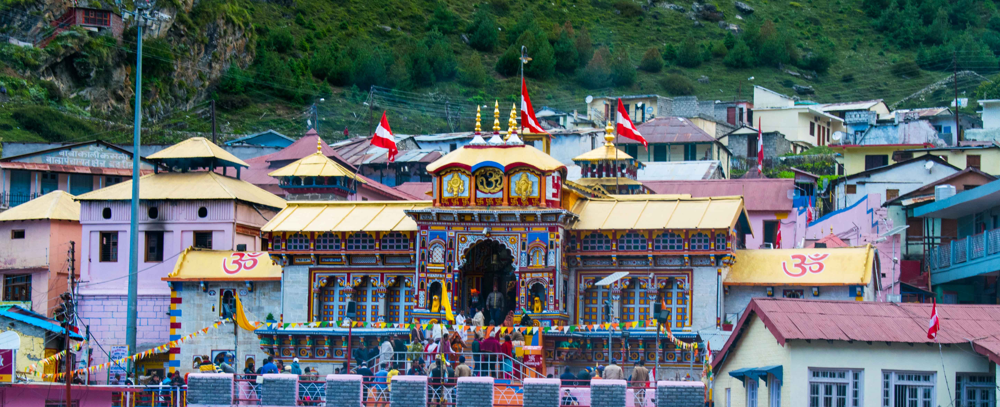
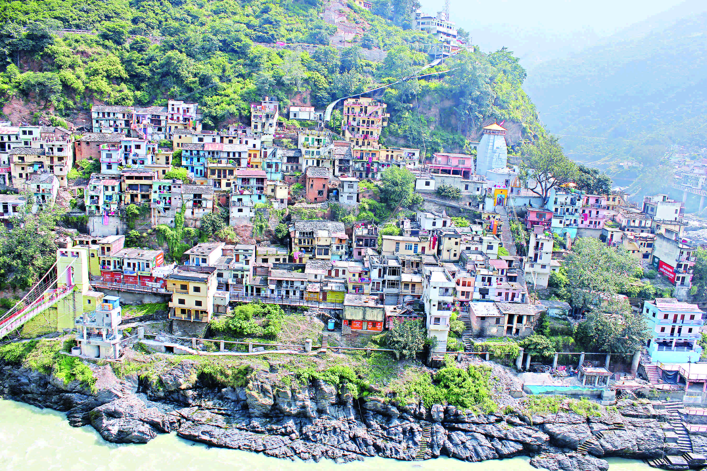
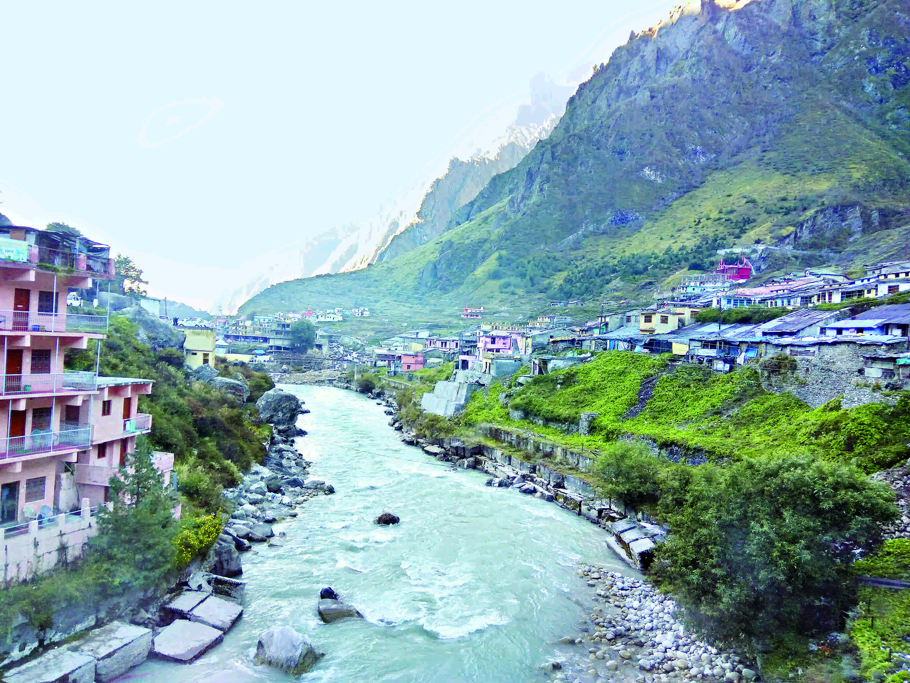
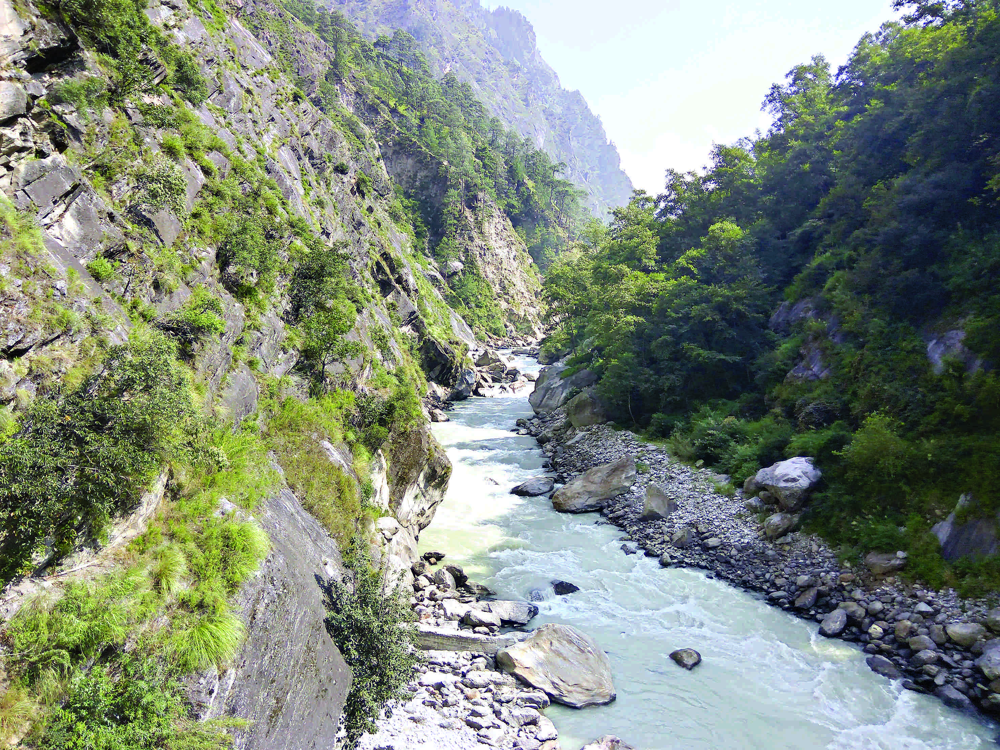

Salvation Quest
Salvation Quest
Badrinath
A Quest for Moksh
   About
Badrinath or Badrinarayan Temple is a Hindu temple dedicated to Vishnu which is situated in the town of Badrinath in Uttarakhand, India. The temple and town form one of the four Char Dham and Chota Char Dham pilgrimage sites. The temple is also one of the 108 Divya Desams dedicated to Vishnu, who is worshipped as Badrinathóholy shrines for Vaishnavites. It is open for six months every year (between the end of April and the beginning of November), because of extreme weather conditions in the Himalayan region. The temple is located in Garhwal hill tracks in Chamoli district along the banks of Alaknanda River at an elevation of 3,133 m (10,279 ft) above the mean sea level. It is one of the most visited pilgrimage centers of India, having recorded 1,060,000 visits. The image of the presiding deity worshipped in the temple is a 1 m (3.3 ft) tall, the black stone statue of Vishnu in the form of Badrinarayan. The statue is considered by many Hindus to be one of eight swayam vyakta kshetras, or self-manifested statues of Vishnu. The Vishnu Purana narrates another version of the origins of Badrinath. According to the tradition, Dharam had two sons, Nar, and Narayanóboth of which are modern names of Himalayan mountains. They chose the place to spread their religion and each of them wed the spacious valleys in the Himalayas. Searching for an ideal place to set up a hermitage, they came across the other four Badris of the Pancha Badri, namely Bridha Badri, Yog Bhadri, Dhyan Badri and Bhavish Badri. They finally found the hot and cold spring behind the Alaknanda River and named it Badri Vishal.
History
Badrinath was re-established as a major pilgrimage site by Adi Shankara in the 7th century. In earlier days, pilgrims used to walk hundreds of miles to visit Badrinath temple. The temple has been repeatedly destroyed by earthquakes and avalanches. As late as the First World War, the town consisted only of the 20-odd huts used by the temple's staff, but the site drew thousands each year and up to 50,000 on its duodecennial festivals (every twelve years). In recent years its popularity has increased still more, with an estimated 600,000 pilgrims visiting during the 2006 season, compared to 90,676 in 1961. The temple in Badrinath is also a sacred pilgrimage site for Vaishnavites. Badrinath is also gateway to several mountaineering expeditions headed to mountains like Nilkantha.
Temple
The Badrinath temple is the main attraction in the town. According to legend Shankar discovered a black stone image of Lord Badrinarayan made of Saligram stone in the Alaknanda River. He originally enshrined it in a cave near the Tapt Kund hot springs.In the sixteenth century, the King of Garhwal moved the murti to the present temple. The temple is approximately 50 ft (15 m) tall with a small cupola on top, covered with a gold gilt roof. The facade is built of stone, with arched windows. A broad stairway leads up to a tall arched gateway, which is the main entrance. The architecture resembles a Buddhist vihara (temple), with the brightly painted facade also more typical of Buddhist temples. Just inside is the mandapa, a large pillared hall that leads to the garbha grha, or main shrine area. The walls and pillars of the mandapa are covered with intricate carving.
TRAVEL
Jolly Grant Airport is the nearest airport from Badrinath, at the distance of 311 kilometers. Nearest railway station from Badrinath is Haridwar Railway Station, at the distance of 318 Kilometers.
STAY
Bholagiri Ashram:Its at NH-58 Badrinath.Open for all devotees.Its an ashram not an hotel Manav Kalyan Ashram:Its near Badrinath temple.Open for all piligrims.It provides facilities of food and stay at very less price. Badrikashrama Vanamali Ashram:Its near Badrinath temple.You can join people of ashram in their activities like pooja,bhandara and ashram virtuous work